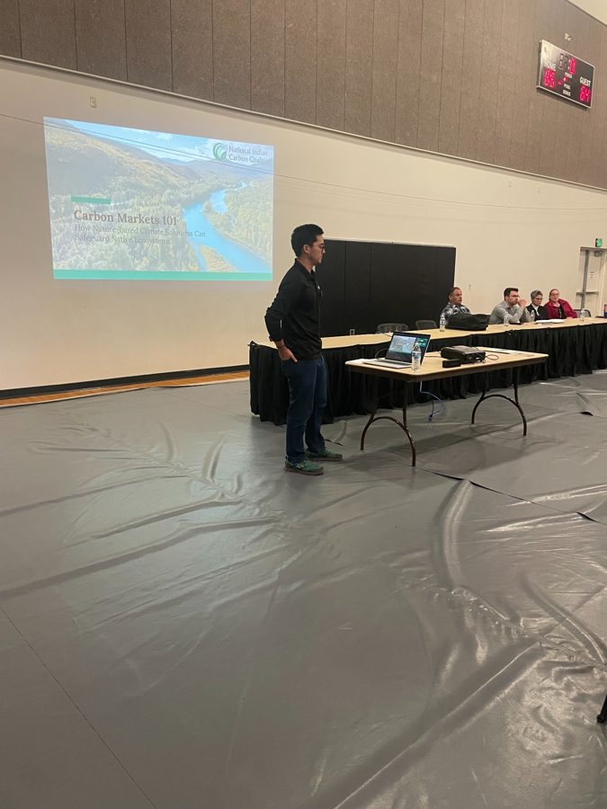
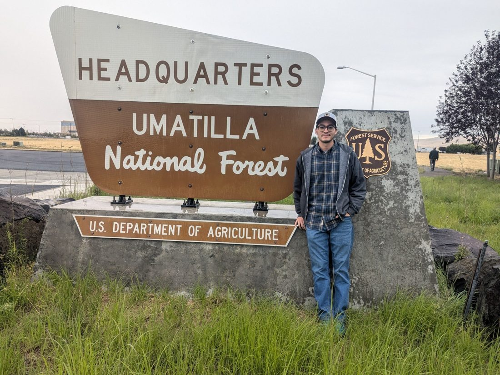

Conservation project management
I help organize goals, partners, timelines, technical information, and implementation pathways for complex natural resource and stewardship projects.
Stewardship
My work sits at the intersection of conservation strategy, natural resource management, GIS, partnership building, and public-facing communication.
I help organize goals, partners, timelines, technical information, and implementation pathways for complex natural resource and stewardship projects.
I have supported Tribal natural resource projects through technical coordination, public communication, meeting support, and partner alignment.
I use spatial tools, field knowledge, and clear communication to make conservation questions visible, practical, and actionable.

Supporting conversations where technical work, community priorities, and public decision-making meet.

Grounded in field experience, public lands, working landscapes, and applied natural resource decisions.